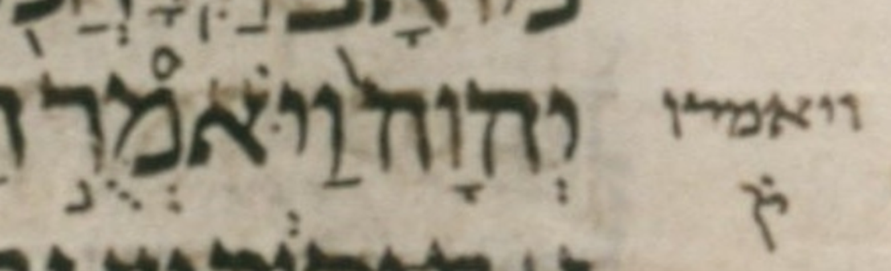

bcv (link to tanach.us)
1s12:10
MPK
וַיֹּאמְרֻ֣
qere
וַיֹּאמְר֣וּ
at issue
וּ
at issue English
changed a qubuts to a shuruq
folio col line
156A 1 5
The qubuts in the MPK becomes a shuruq dot in the qere.